🔐
1. Logging In
Section 1
Access the admin panel by visiting the admin URL in any modern web browser (Chrome, Edge, or Firefox).
🌐 Admin URL: https://admin.mountaineerdebasish.com
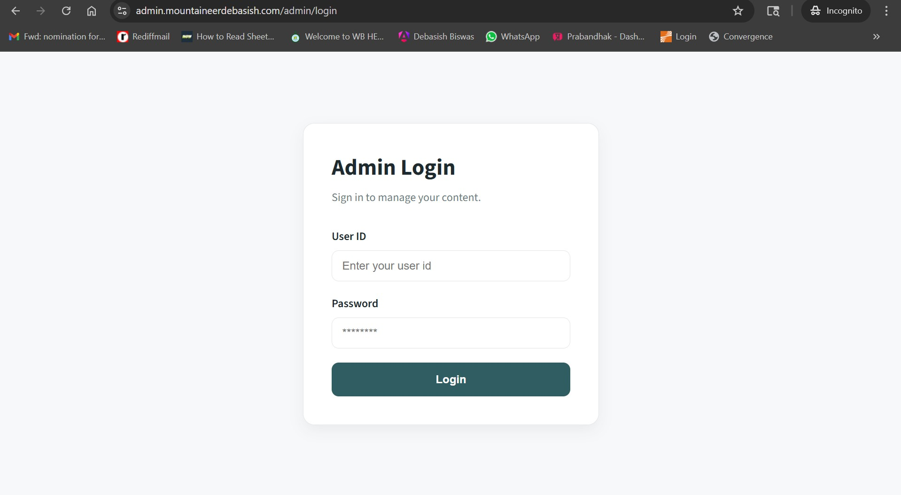
Figure 1.1 — Admin Login page
Steps to Log In
1
Open your browser and go to the admin URL above.
2
Enter your User ID in the first field.
3
Enter your Password in the second field.
4
Click the Login button. You will be taken to the Dashboard.
⚠️ Do not share your User ID or Password with anyone. Contact your developer if you forget your credentials.
📊
2. Dashboard Overview
Section 2
After logging in you land on the Dashboard — the home screen of your admin panel. It shows a quick summary of your content.
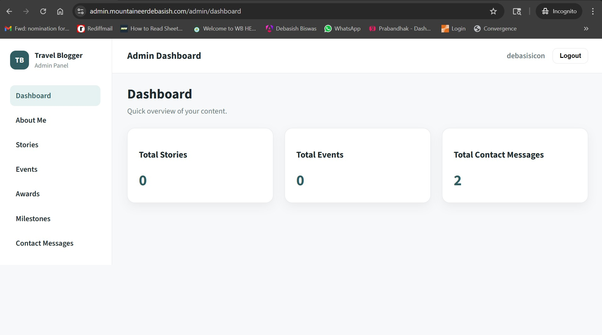
Figure 2.1 — Admin Dashboard with content summary cards
Summary Cards
The dashboard shows three count cards at a glance:
| Card | What It Shows |
|---|
| Total Stories | Number of blog stories you have created |
| Total Events | Number of events you have added |
| Total Contact Messages | Number of messages received via the contact form |
Navigation Sidebar
The left sidebar is always visible. Click any item to navigate to that section:
| Menu Item | What It Manages |
|---|
| Dashboard | Home screen with summary counts |
| About Me | Your profile heading, biography, and photo |
| Stories | Blog articles and travel write-ups |
| Events | Upcoming expedition and event announcements |
| Awards | Awards and recognition entries |
| Milestones | Career milestone timeline on the About page |
| Contact Messages | Inbox for contact form submissions |
Logging Out
Click the Logout button in the top-right corner to securely end your session.
The About Me section controls your profile content displayed on the website's About page — your heading, full biography, and profile photo.
3.1 Viewing Current Content
Click About Me in the sidebar. Your current content is displayed with a Last updated timestamp, along with Edit and Delete buttons at the bottom.
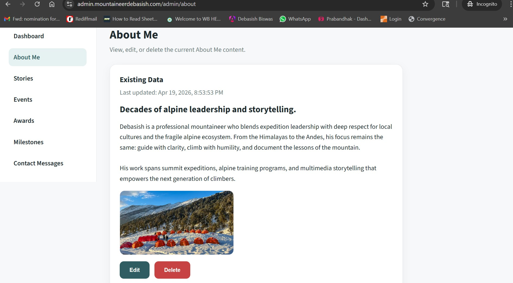
Figure 3.1 — About Me page showing existing content with Edit and Delete buttons
3.2 Editing Your Profile
1
Click the Edit button to open the edit form.
2
Update the Heading, Biography, and/or Profile Image as needed.
3
To change your photo, click Choose File and select a new image from your computer.
4
Click Save Changes to apply. Click Cancel to discard.
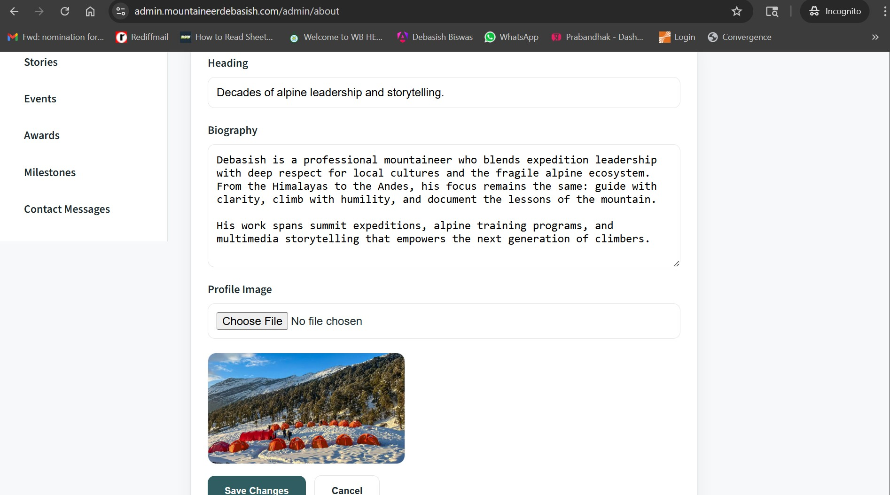
Figure 3.2 — About Me edit form with Heading, Biography, Profile Image, and Save Changes button
Fields
| Field | Description | Required |
|---|
| Heading | Short title shown on the About page (e.g. "Decades of alpine leadership and storytelling.") | Required |
| Biography | Your full profile biography displayed on the About page | Required |
| Profile Image | Your profile photo. Upload JPG, PNG, or WEBP (max 5 MB). The current image is previewed below the file picker. | Required |
📷 Image tip: Use a high-quality photo of at least 600×600 px. The image is stored securely in Azure Blob Storage and a fresh preview link is generated automatically.
⚠️ Clicking Delete permanently removes your About Me content from the website. You will need to re-enter everything from scratch. Use with caution.
Stories are your blog articles and travel write-ups. They appear on the Stories page of your website. You can keep them as drafts or publish them for the world to read.
4.1 Viewing All Stories
Click Stories in the sidebar. All your stories are listed in a table. When no stories exist yet, the page shows "No stories yet. Create your first story."
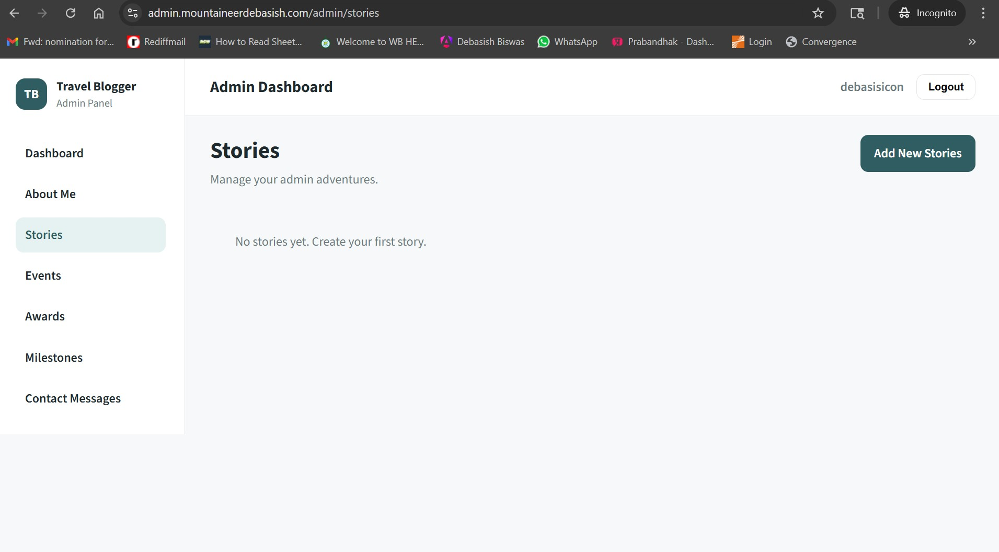
Figure 4.1 — Stories page with Add New Stories button (top right)
4.2 Creating a New Story
1
Click the Add New Stories button at the top right of the Stories page.
2
Fill in the Title. The Slug is auto-generated from the title — you do not need to type it.
3
Write a short Excerpt (preview text shown on the listing page).
4
Set Status — choose Draft to save privately or Published to go live on the website.
5
Write your full story in the Content rich text editor (supports bold, headings, lists, links, images).
6
Optionally upload a Cover Image and set a Publish Date.
7
Click Publish Story to save.
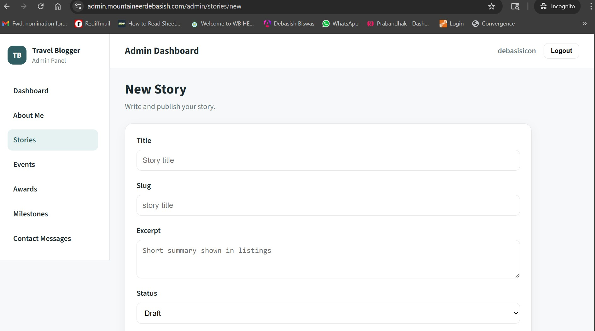
Figure 4.2 — New Story form showing Title, Slug, Excerpt, and Status fields
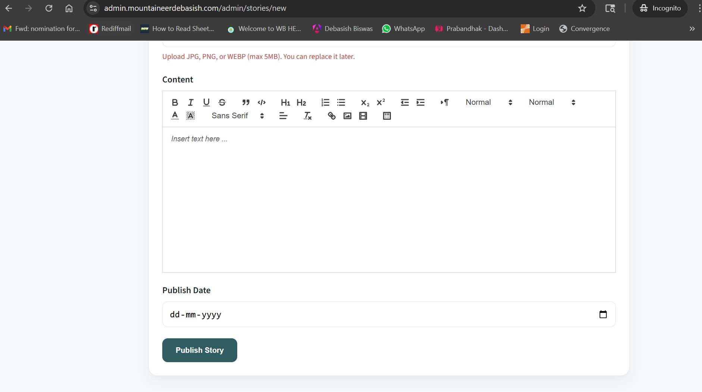
Figure 4.3 — New Story form showing the rich text Content editor, Publish Date, and Publish Story button
Story Fields
| Field | Description | Required |
|---|
| Title | The headline of your story | Required |
| Slug | URL-friendly version of the title. Auto-generated — leave as is unless needed. | Required |
| Excerpt | Short summary shown on the Stories listing page (max 500 characters) | Required |
| Status | Draft = saved but not visible on website. Published = live on website. | Required |
| Content | Full story with rich text formatting. Use toolbar for bold, headings, bullet lists, etc. | Required |
| Cover Image | Upload JPG, PNG, or WEBP (max 5 MB). Shown as thumbnail on listing page. | Optional |
| Publish Date | Date shown on the story. Leave blank to use today's date. | Optional |
4.3 Editing / Deleting a Story
To edit: Click the ✏️ edit icon next to a story in the list → make changes → click Publish Story.
To delete: Click the 🗑️ delete icon → confirm the dialog.
⚠️ Deletion is permanent and cannot be undone. Also, do not change the Slug of a published story — it will break existing links to that story.
💡 Tip: Save as Draft first, review it on the live site, then switch to Published when you are happy with it.
Events are upcoming or past expedition announcements and programs. They appear on the Upcoming Events page of your website.
5.1 Viewing All Events
Click Events in the sidebar. All events are listed in a table. When no events exist yet, the page shows "No events yet. Add your first event."
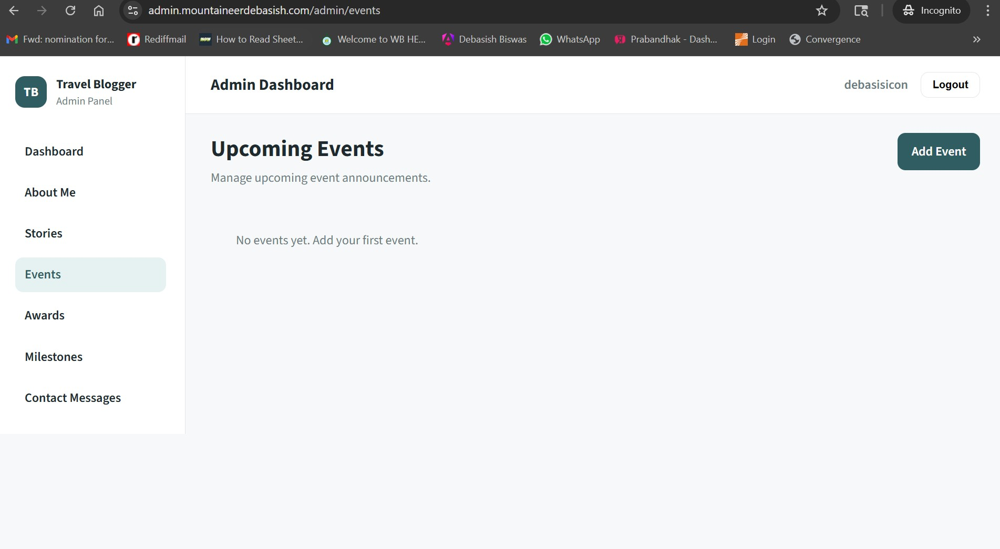
Figure 5.1 — Upcoming Events page with Add Event button (top right)
5.2 Creating a New Event
1
Click the Add Event button at the top right.
2
Enter the event Title, Location, and Date.
3
Write the event Details — describe what participants can expect.
4
Optionally upload a Cover Image.
5
Click Create Event to save.
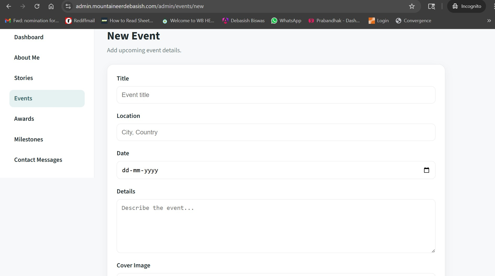
Figure 5.2 — New Event form showing Title, Location, Date, and Details fields
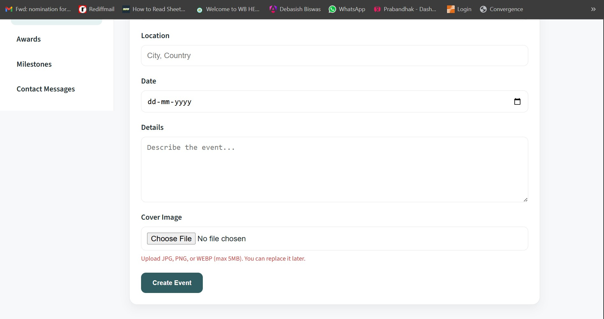
Figure 5.3 — New Event form showing Cover Image upload and Create Event button
Event Fields
| Field | Description | Required |
|---|
| Title | Name of the event (e.g. "Ladakh Winter Trek 2026") | Required |
| Location | City and country where the event takes place (e.g. "Leh, Ladakh") | Required |
| Date | Date of the event. Click the calendar icon to pick a date. | Required |
| Details | Full description — itinerary, what to bring, registration info, etc. | Required |
| Cover Image | Upload JPG, PNG, or WEBP (max 5 MB) | Optional |
To edit or delete an event: Use the ✏️ edit or 🗑️ delete icons in the events list.
🏆
6. Awards & Recognition
Section 6
Manage the awards and recognitions displayed on your website's Awards page.
6.1 Viewing All Awards
Click Awards in the sidebar. When no awards exist yet, the page shows "No awards yet. Add your first award."
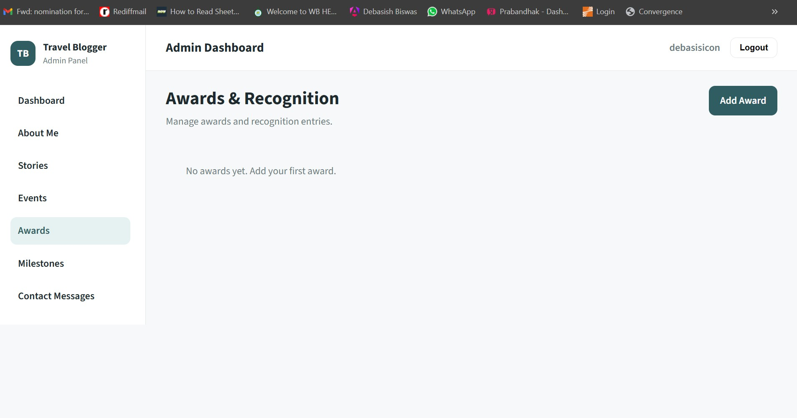
Figure 6.1 — Awards & Recognition page with Add Award button (top right)
6.2 Adding a New Award
1
Click the Add Award button at the top right.
2
Enter the Year the award was received (e.g. 2024).
3
Enter the award Title and the Organization that gave it.
4
Write a Description explaining what the award is for.
5
Optionally upload a Cover Image (photo of the award, certificate, or trophy).
6
Click Create Award to save.
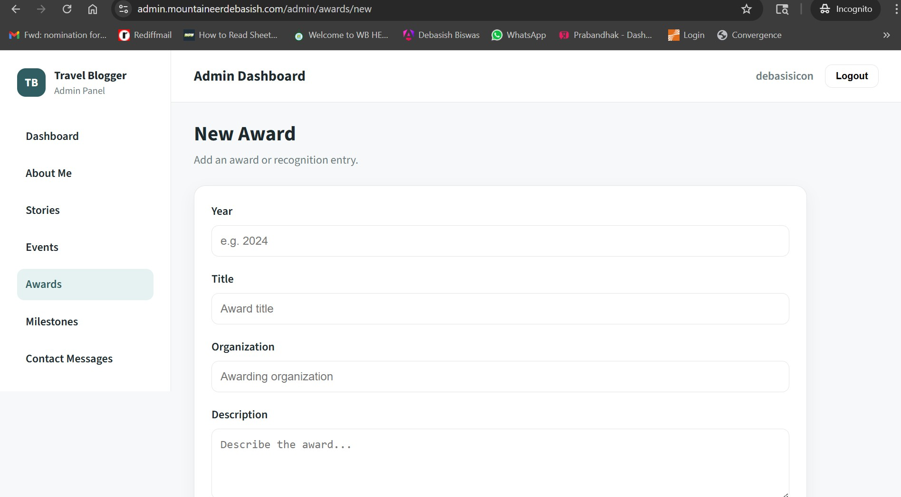
Figure 6.2 — New Award form showing Year, Title, Organization, and Description fields
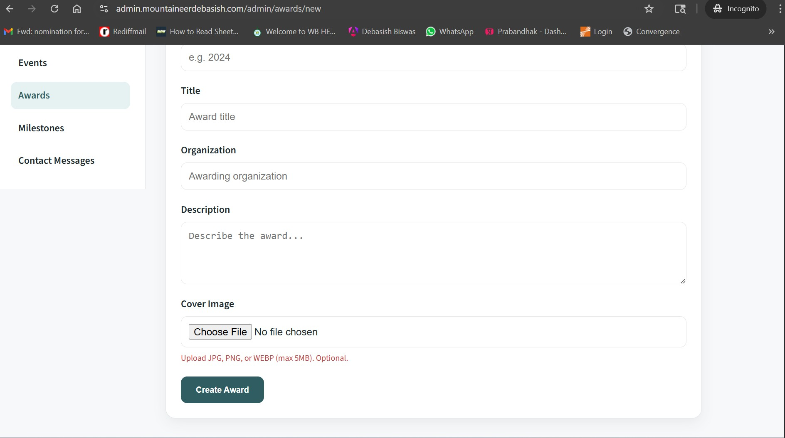
Figure 6.3 — New Award form showing Cover Image upload (optional) and Create Award button
Award Fields
| Field | Description | Required |
|---|
| Year | Year the award was received (e.g. 2024) | Required |
| Title | Full name of the award | Required |
| Organization | The body or institution that awarded it | Required |
| Description | A brief explanation of the achievement | Required |
| Cover Image | Upload JPG, PNG, or WEBP (max 5 MB). Marked as Optional in the form. | Optional |
ℹ️ Awards are displayed newest-first (by year) on the website.
🗺️
7. Milestones
Section 7
Milestones are key career achievements displayed as a timeline on your About page. Use them to highlight the defining moments of your mountaineering journey.
7.1 Viewing All Milestones
Click Milestones in the sidebar. When none exist yet the page shows "No milestones yet. Add your first milestone."
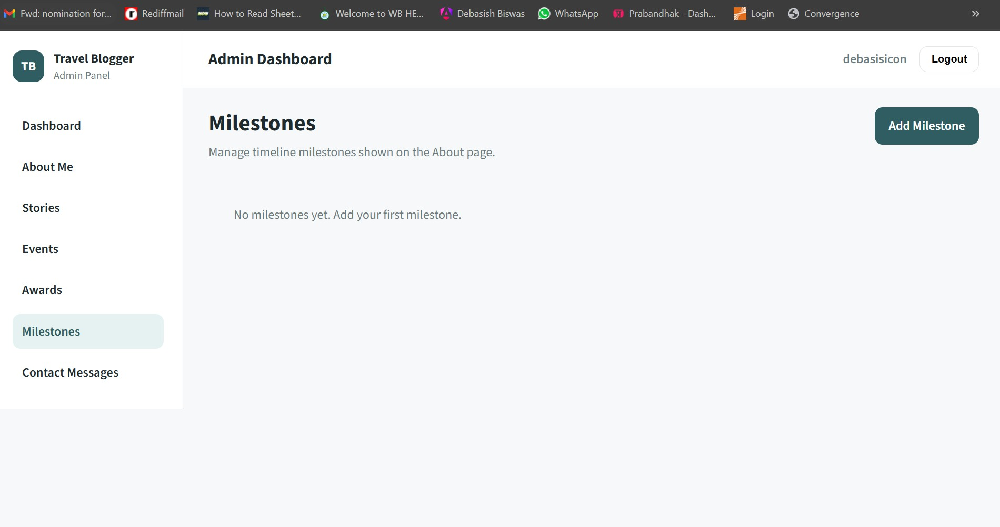
Figure 7.1 — Milestones page with Add Milestone button (top right)
7.2 Adding a New Milestone
1
Click the Add Milestone button at the top right.
2
Enter the Year the milestone occurred (e.g. 2019).
3
Enter a short Title for the milestone (e.g. "First Himalayan Summit").
4
Write a Description — a few sentences about the achievement.
5
Click Create Milestone to save.
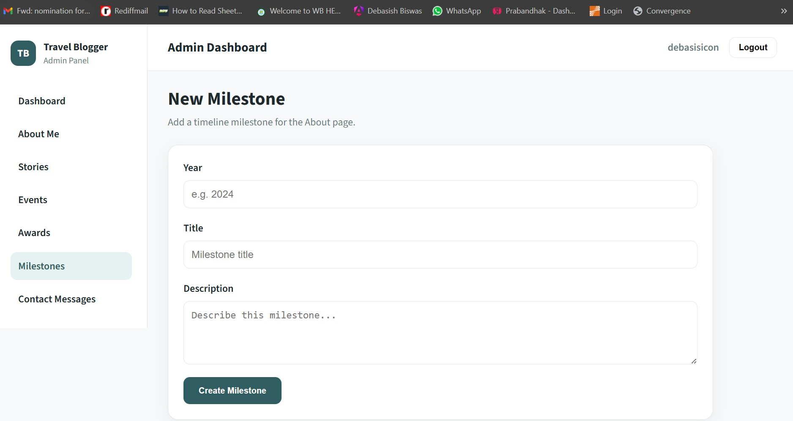
Figure 7.2 — New Milestone form with Year, Title, Description fields and Create Milestone button
Milestone Fields
| Field | Description | Required |
|---|
| Year | The year this milestone occurred (e.g. 2019) | Required |
| Title | Short headline for the milestone | Required |
| Description | A brief description of the achievement | Required |
ℹ️ Milestones are displayed in chronological order (oldest to newest) on the About page timeline.
✉️
8. Contact Messages
Section 8
When a visitor submits the contact form on your website, their message appears here. You also receive an email notification at your inbox automatically.
8.1 Viewing Messages
Click Contact Messages in the sidebar. All submissions are shown in a table.
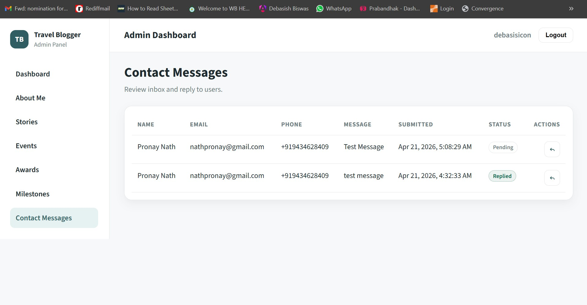
Figure 8.1 — Contact Messages inbox showing Pending and Replied statuses
What Each Column Means
| Column | What It Shows |
|---|
| Name | Visitor's full name |
| Email | Visitor's email address |
| Phone | Visitor's phone number (with country code) |
| Message | The message they wrote in the contact form |
| Submitted | Date and time the message was sent |
| Status | Pending = not yet replied. Replied = a reply has been sent. |
| Actions | ↩ Reply button — click to open the reply panel |
8.2 Replying to a Message
You can send a reply directly from the admin panel. The visitor will receive your reply by email.
1
Find the message you want to reply to in the list.
2
Click the ↩ reply arrow button in the Actions column on the right.
3
A Reply Message text area appears below the message row. Type your reply.
4
Click Send Reply. The visitor's email receives your reply instantly.
5
To cancel without sending, click Cancel.
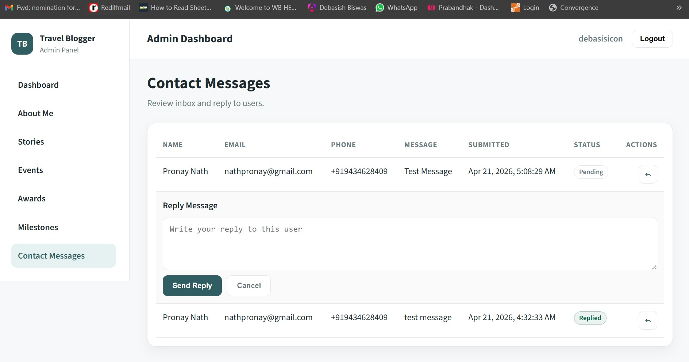
Figure 8.2 — Reply panel open with text area, Send Reply and Cancel buttons
✅ After a successful reply the message status changes from Pending to Replied (shown in green).
📧 You receive an email notification at icondeba4@gmail.com every time a new contact message is submitted.
💡
9. Tips & Best Practices
Section 9
Images
- Always use JPG, PNG, or WEBP format. Avoid BMP or TIFF.
- Keep image file sizes under 5 MB. Use a free tool like squoosh.app to compress before uploading.
- Landscape images (wider than tall) work best for stories and events. Portrait works for profile photos.
Stories
- Use Draft to save a story privately first, review it on the live website, then switch to Published.
- Keep the Excerpt short — 2 to 3 sentences only. It is the preview text on the listing page.
- Do not change the Slug after a story is published — existing links will break.
Contact Messages
- Reply within 24–48 hours for the best client experience.
- You will receive an email notification at icondeba4@gmail.com for every new submission.
- A message marked Replied cannot be changed back to Pending.
General
- Changes made in the admin panel appear on the live website immediately.
- There is no "undo" — double-check content before saving or deleting.
- Use a modern browser (Chrome, Edge, or Firefox) for the best experience.
- If something looks wrong on the website after saving, try a hard refresh: press Ctrl + Shift + R.
⚠️ Deletions are permanent. Stories, Events, Awards, and Milestones cannot be recovered after deletion. Always double-check before clicking Delete.
Admin Panel User Manual — Mountaineer Debasish · Version 1.0 · April 2026
For technical support, contact your developer.